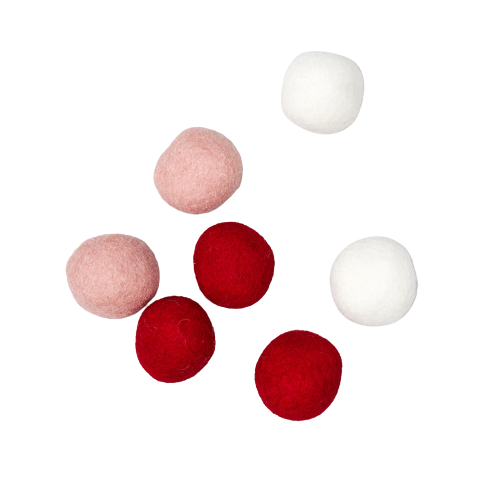
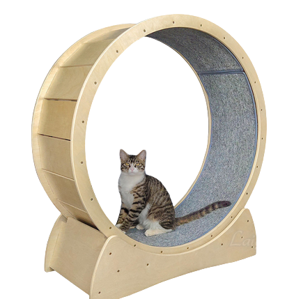
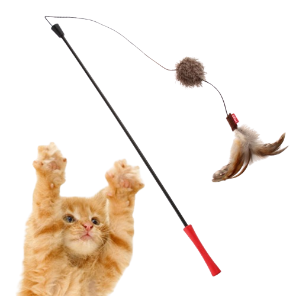
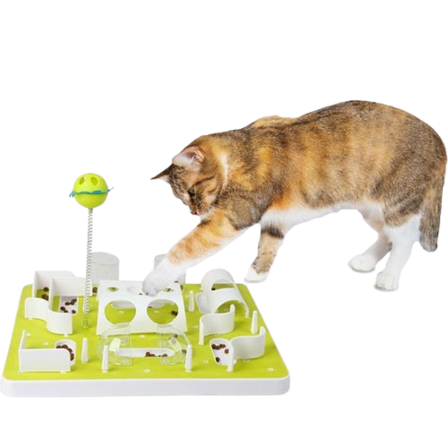
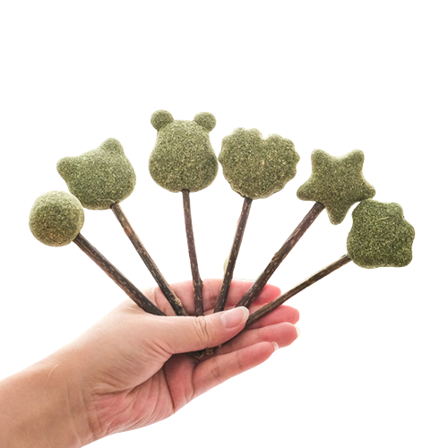
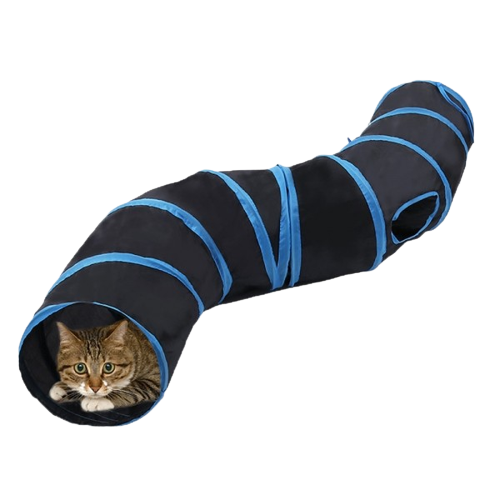
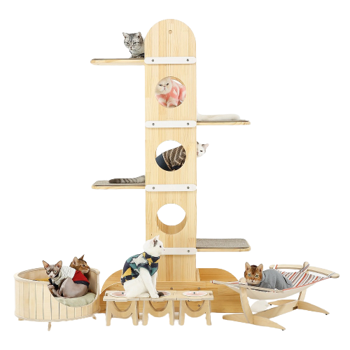
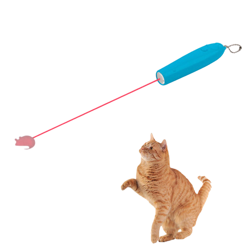

Home
간식 종류
장난감
루시
계정
유튜브
인스타
공

굴려주면 좋아함 던져줘도 좋아함ㅎ
캣휠

고양이의 러닝머신🏃♂️
고양이는 대부분의 시간을 집 안에서 보내기 때문에
달리는 것으로 에너지를 소비할 수 있는 배출구가 될 수 있다!
낚시대

끝에 깃털이나 인형이 달려있어 고양이와 사냥놀이에 좋다.
고양이를 낚시하는 것처럼 흔들어주면 월척~~~~
퍼즐장난감

가지고 놀라고 사줬더니 쓰레기가 되는 기적~
캣닢장난감

환장하는 캣닢을 장난감으로~
고양이 터널

상자를 좋아하는 것처럼 고양이는 사방이 막힌 안락한 공간을 좋아함!
통로 한 개로 이루어진 것도 있고,
두 갈래 이상으로 나누어진 복잡한 모양도 있다.
터널 안에 고양이가 좋아하는 장난감을 달기도 한다.
캣타워

집 안에는 고양이가 높이 오를만한 공간이 없는 경우가 많다. 캣타워는 오르고 싶어 하는 고양이의 본능을 건강하게 충족시켜준다.
레이저

고양이가 좋아하지만 주의사항이 있음!!!!
시력을 손상시킬 수 있기 때문에 고양이의 눈에 직접 쏘지 않도록 해야한다.
먹이인 줄 알고 쫓은 고양이에게 좌절감을 안겨줄 수 있다.
따라서 놀이 이후에는 먹이를 주는 등의 보상을 해줘야 한다.